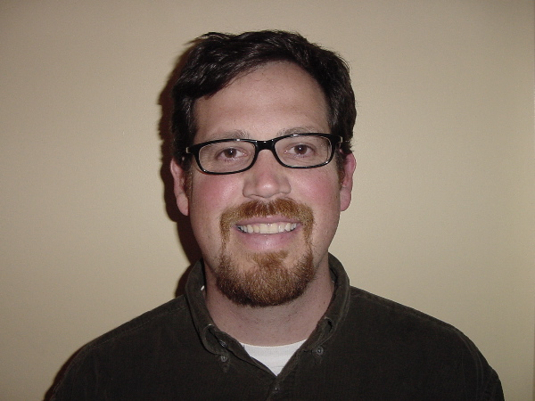

|  |
Associate Professor 512 Williams Hall (802) 656-1184 |
Luis Vivanco is a Cultural Anthropologist and Director of UVM's Area and International Studies Program. He holds a B.A. in Religion from Dartmouth College (1991), and M.A. (1995) and Ph.D. (1999) degrees in Cultural Anthropology from Princeton University. He came to UVM in 1997 as a New England Board of Higher Education Dissertation Write-up Fellow, and began as Assistant Professor in 1999. In 2005, he was awarded tenure and promoted to Associate Professor.
His scholarship focuses on the cultural and political aspects of "saving nature" in Costa Rica and Mexico. This research explores how meanings of nature and social change are debated, negotiated, imposed, and resisted in the context of environmental and indigenous social movements, ecotourism, and sustainable development. He has also begun a new research project on visual culture and environment, which involves research on how the media, zoos, and other public institutions help shape popular understanding of environmental issues.
He has published several books on different aspects of this research, including Green Encounters: Shaping and Contesting Environmentalism in Rural Costa Rica (Berghahn Books, 2006), and (as co-editor with Rob Gordon) Tarzan was an Ecotourist…And Other Tales in the Anthropology of Adventure (Berghahn Books, 2006). He has also published his research in various journals (American Anthropologist, Ethnology, Alternatives Journal, The Ecologist) and books on democracy and environmentalism; reconstructing conservation; tourism; and religion and cinema.
He also has several anthropology textbooks. He is co-editor of Talking About People: Readings in Contemporary Cultural Anthropology (McGraw-Hill Higher Education, 4 th edition, 2005). He is currently co-authoring two new textbooks for McGraw-Hill, an introduction to cultural anthropology and an introduction to general anthropology.
Complementing his academic work, Luis has been involved in Indigenous tourism activism, as a board member of Indigenous Tourism Rights International, and during 2006-7 is a Visiting Public Policy Fellow at the Snelling Center for Government.
He has received a number of prestigious awards to support his ethnographic research, including Wenner-Gren Foundation for Anthropological Research, MacArthur Foundation, Mellon Foundation, and the New England Board of Higher Education. He has also received a National Endowment for the Humanities grant to attend an cultural studies institute at the East-West Center (University of Hawai'i) and a Fullbright Award to teach at the University of Costa Rica.
Luis teaches a variety of courses for the Anthropology department. In his area of research specialization, he teaches courses on Culture and Global Environmental Problems, Culture and Globalization, Anthropology of Media, and Applied and Development Anthropology, and Indigenous Social Movements. He also teaches Ethnographic Research Methods, Anthropological Theory, Latinos in the U.S., Race and Ethnicity in the U.S., and Introduction to Human Cultures. In 2006, he co-led UVM's first semester study abroad program in Oaxaca, Mexico.
For more information on Luis's courses, please visit his website.